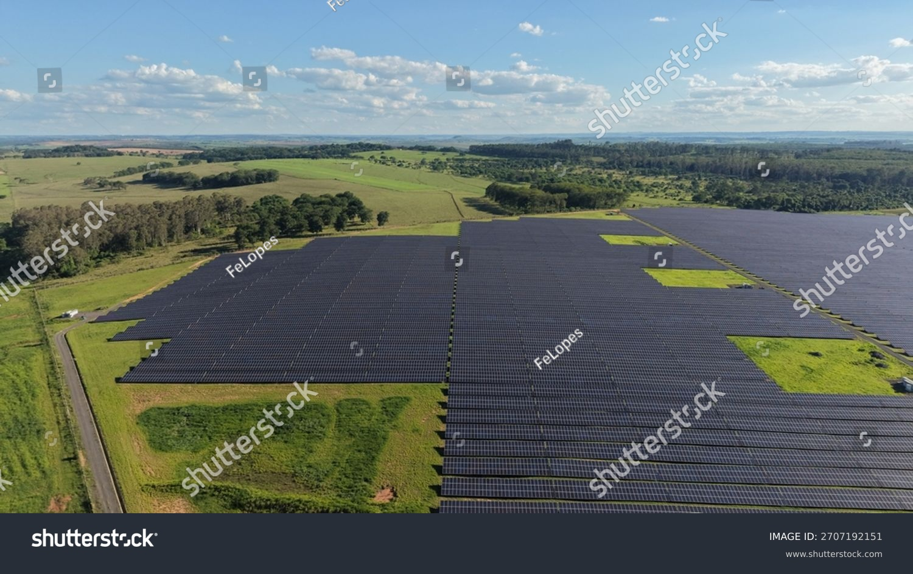
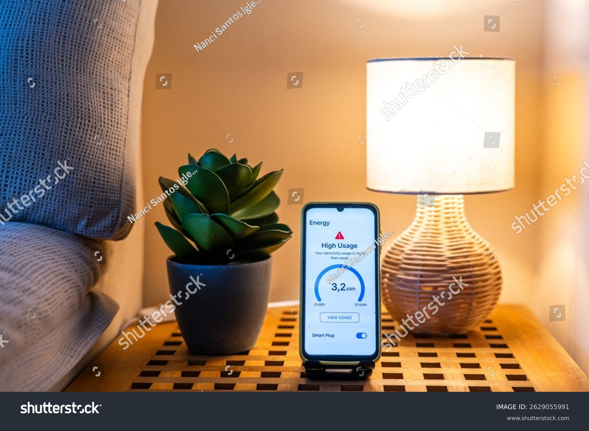
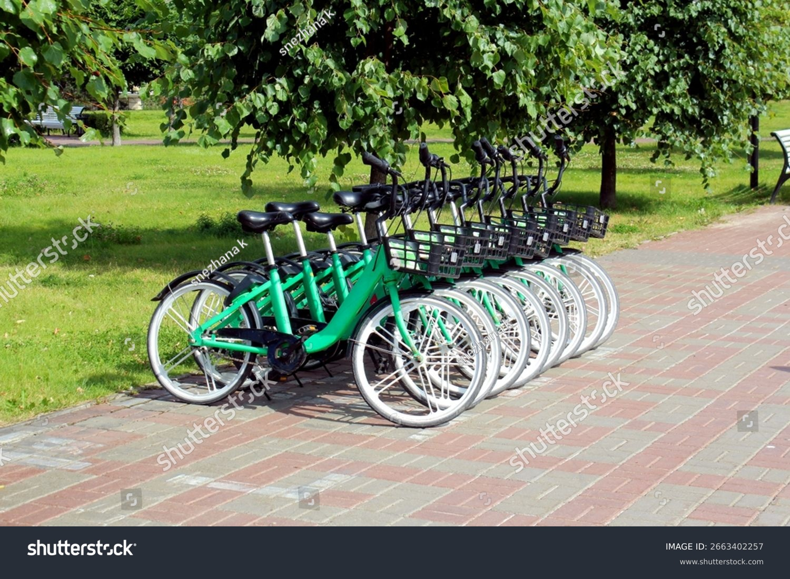
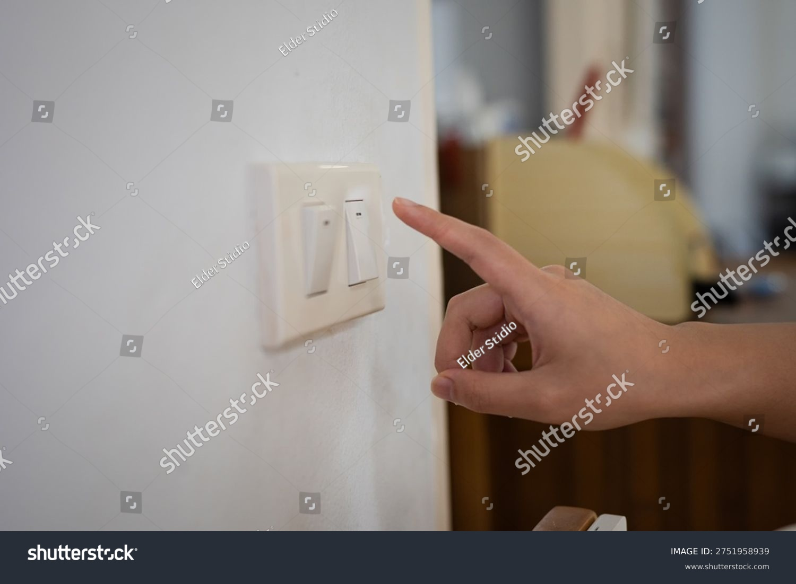

How Students Can Support Affordable and Clean Energy in Everyday Life
Affordable and clean energy is not only a government or industry issue. Students can also help by using electricity carefully, supporting cleaner transport, learning about renewable energy, and encouraging better habits at home and on campus. Small actions may seem simple, but they become more powerful when many people practise them every day.
On this page
What SDG 7 Means
Sustainable Development Goal 7 focuses on making energy affordable, reliable, sustainable, and modern for everyone. This includes improving access to electricity, using renewable energy such as solar and wind, and reducing wasted energy. Clean energy is important because many communities still face energy problems, and pollution from older energy sources harms both people and the environment.

Clean energy sources such as solar power can reduce pollution and support sustainable living.
Saving Energy at Home
One simple way students can support SDG 7 is by reducing wasted electricity at home. Turning off lights, unplugging chargers, using fans carefully, and choosing energy-saving bulbs are all useful habits. These actions help lower electricity bills and reduce unnecessary energy use.
Students can also talk to family members about using appliances more efficiently. For example, it is better to avoid running devices when they are not needed and to make full use of natural daylight during the day.

Simple habits at home can reduce electricity waste and support affordable energy use.
Better Energy Habits on Campus
University campuses use large amounts of electricity every day. Students can help by switching off classroom equipment when it is not needed, using lifts only when necessary, and choosing digital work instead of unnecessary printing. These actions may seem small, but they support a more responsible energy culture.
Campuses can also become stronger examples of sustainable practice when students support green societies, awareness campaigns, and energy-saving discussions. Student behaviour has an important effect on how shared spaces are used.
Cleaner Transport Choices
Transport is closely connected to energy use. Students who walk, cycle, car-share, or use public transport can help reduce fuel use and pollution. Cleaner transport choices also support healthier lifestyles and reduce pressure on road systems.
In the future, more communities will depend on electric transport and better energy systems. Learning to choose efficient transport now helps students build better habits for later life.

Cleaner transport choices support both affordable energy use and a healthier environment.
Why Student Action Matters
Students are future workers, professionals, and decision-makers. The habits they build now can influence homes, workplaces, and communities later. Supporting clean and affordable energy does not always require expensive technology. It often begins with awareness, simple daily actions, and willingness to encourage others.
SDG 7 becomes more realistic when people understand that energy choices affect daily life. By saving electricity, supporting renewable energy, and choosing cleaner transport, students can take part in meaningful progress.

Student action can help create long-term change in energy awareness and sustainable living.